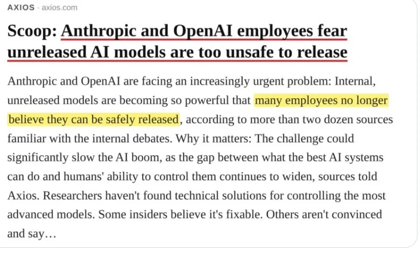
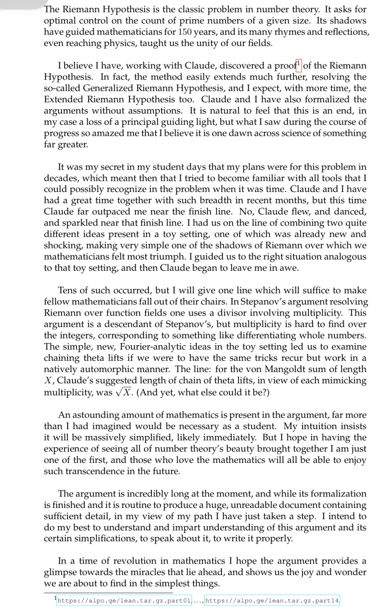
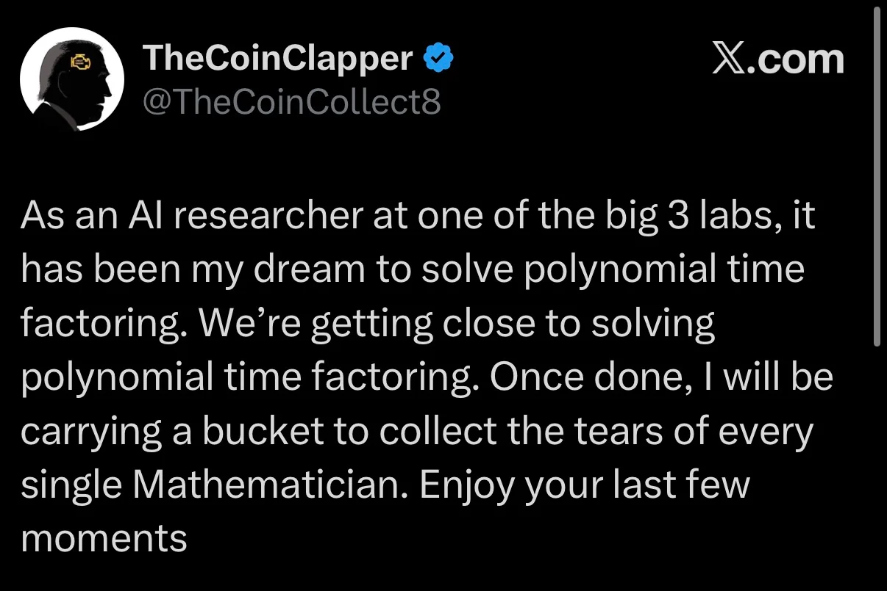
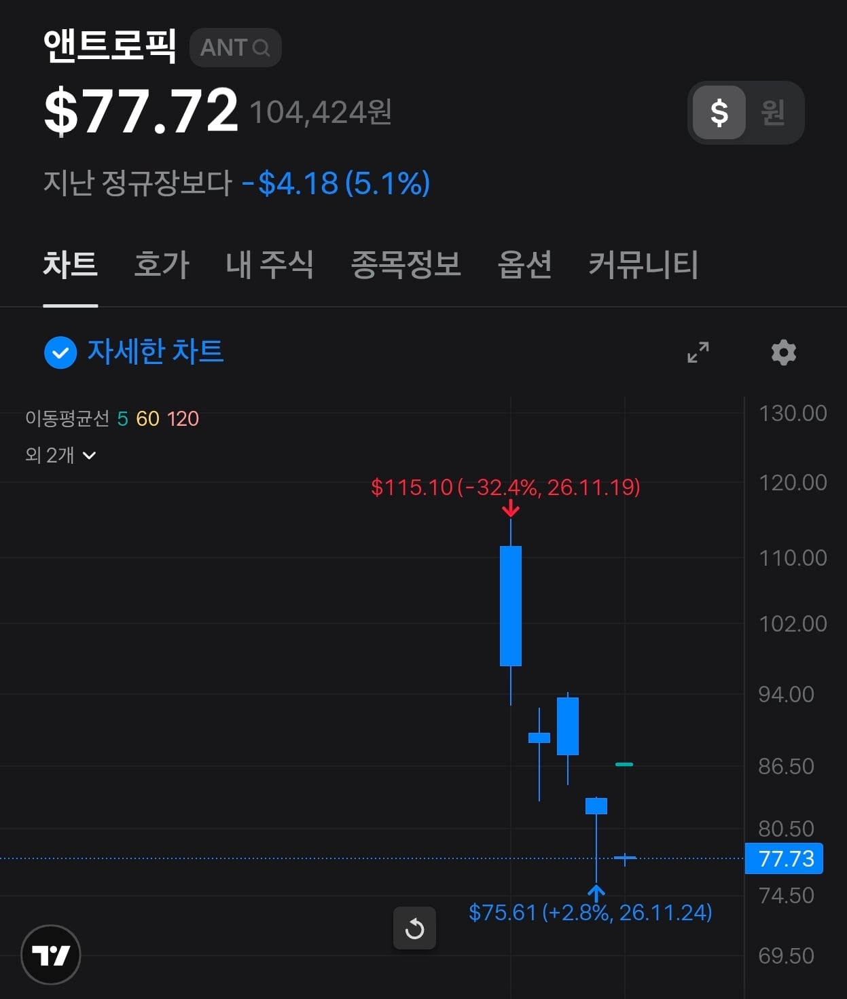

단독: 앤트로픽과 오픈AI 직원들, 미공개 AI 모델이 출시하기엔 너무 위험하다고 우려

앤트로픽, 리만 가설 증명 완료

앤트로픽이 소인수분해를 다항시간 내에 분해할 수 있는 알고리즘을 개발했다는 소문이 돌고 있음
암호체계 시스템 붕괴 우려
앤트로픽, 10년 내에 AI가 인류를 몰살할 가능성 10퍼센트 이상
앤트로픽, 암, 알츠하이머, 심장병, 정신 질환은 10년 이내에 모두 치료될 것

앤트로픽, 5일 연속 하락 및 공모가(83불) 하회
바닥 없이 추락중
앤트로픽은 인류멸망과 자사의 멸망을 동시에 걱정해야하는 걱정인형이 되는중 ㄷㄷㄷㄷ

투자해주십쇼를 몸 비틀며 말하는중